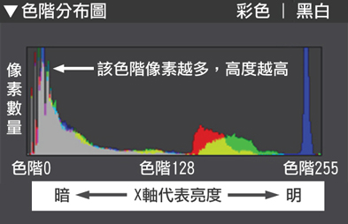
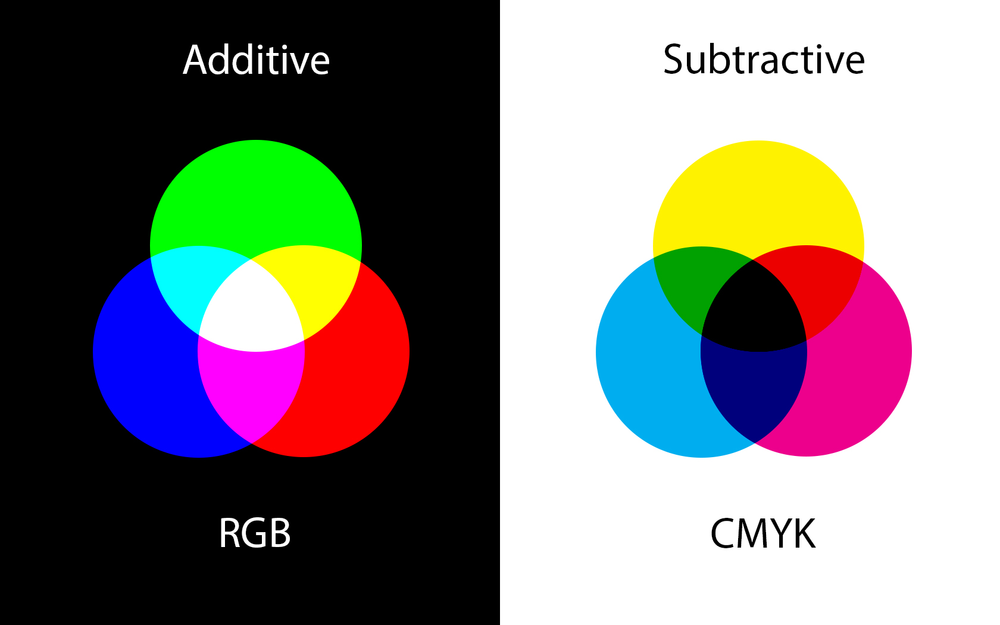
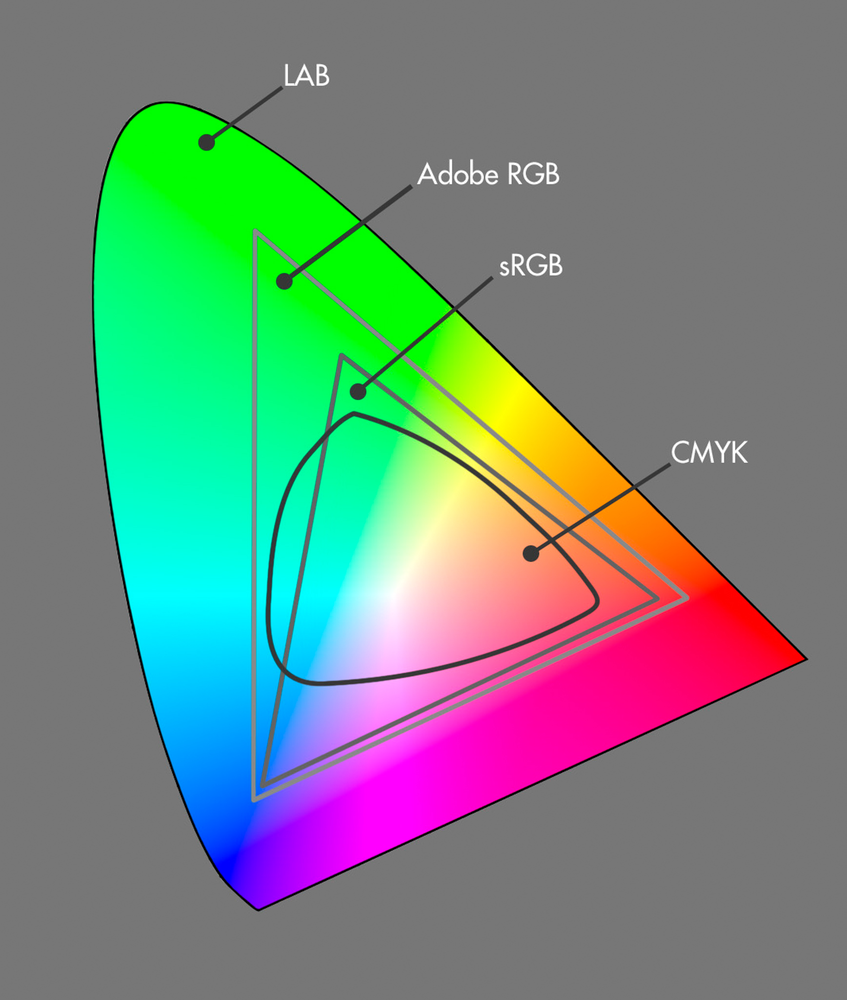

數位暗房
-沒有最好只有更好
2015.11.5
廖子慶
數位底片
LightRoom
setting
None
-
Fade
-
Slide
-
Convex
-
Concave
-
Zoom
Black
-
White
-
League
-
Sky
-
Beige
-
Simple
Serif
-
Blood
-
Night
-
Moon
-
Solarized
數位底片
認識RAW檔
raw常見的格式
廠商
副檔名
Nikon
NEF
Canon
CR2
Sony
ARW
Adobe
DNG
RAW儲存的是
光(電子)訊號
圖檔儲存的
色彩資訊
電子訊號的轉換
是我可以控制的
色溫
色調
飽和度
銳利度
......
最常舉例的狀況：色溫
raw
jpg
決定RAW檔
光圈
快門
iso
LightRoom
色階分佈圖

色彩概念

補充

基礎
匯入
曝光度
對比度
色溫
飽和度
裁切
複製貼上
儲存
進階
減噪
單色調整
變形抑制
紫邊抑制
色調曲線
漸層濾鏡
預設集
圖檔常見的格式
副檔名
優點
缺點
.jpg
檔案小
細節差、邊緣模糊
.png
不失真、網頁可開啟
檔案大
.tiff
不失真、後製有利
檔案大、網頁不可開啟
END
謝謝大家